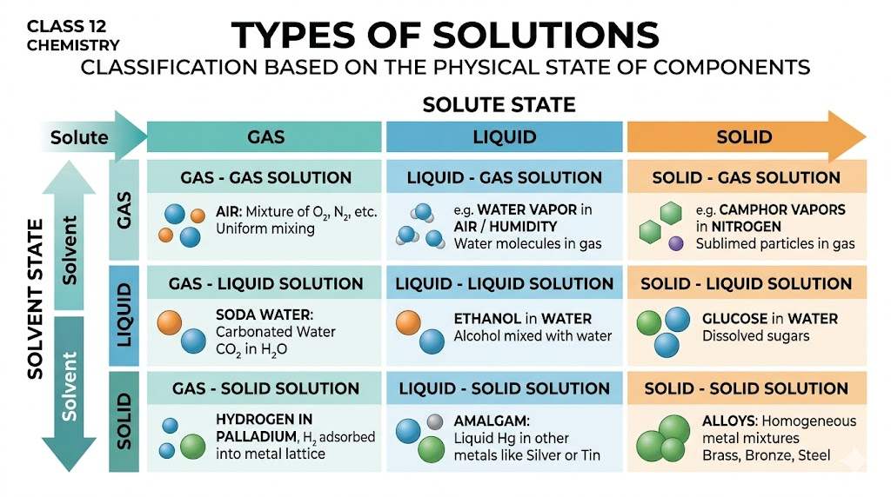
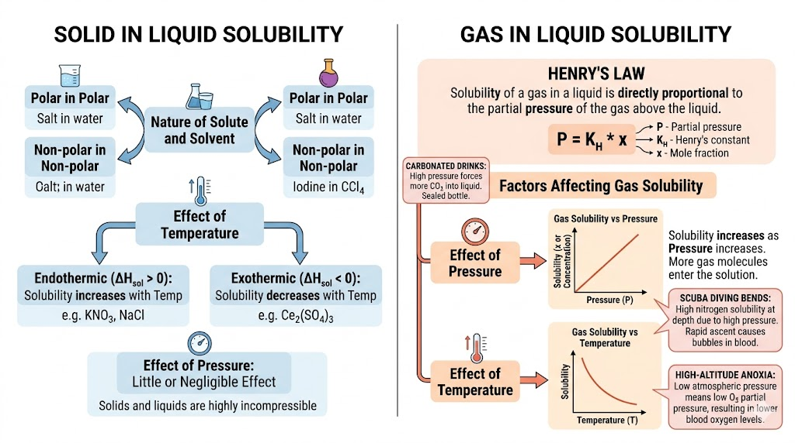
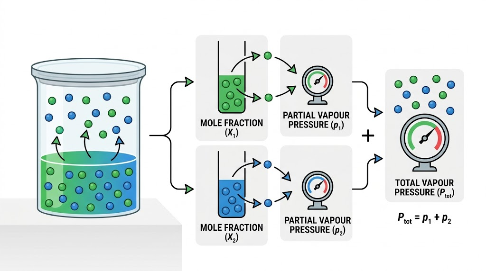
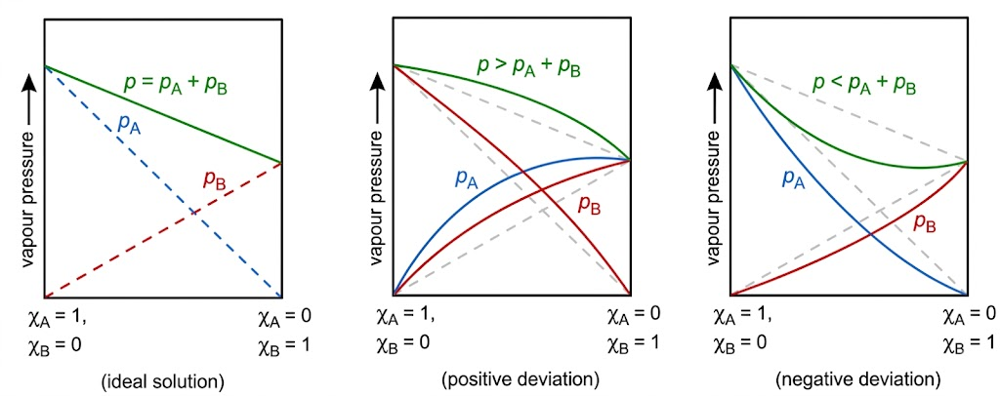
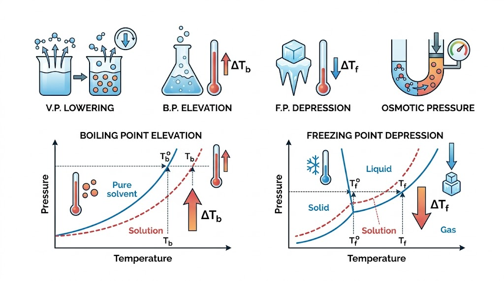
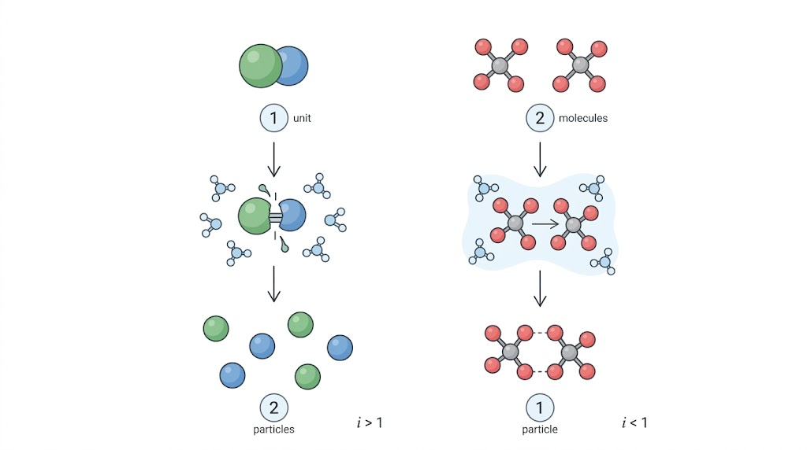
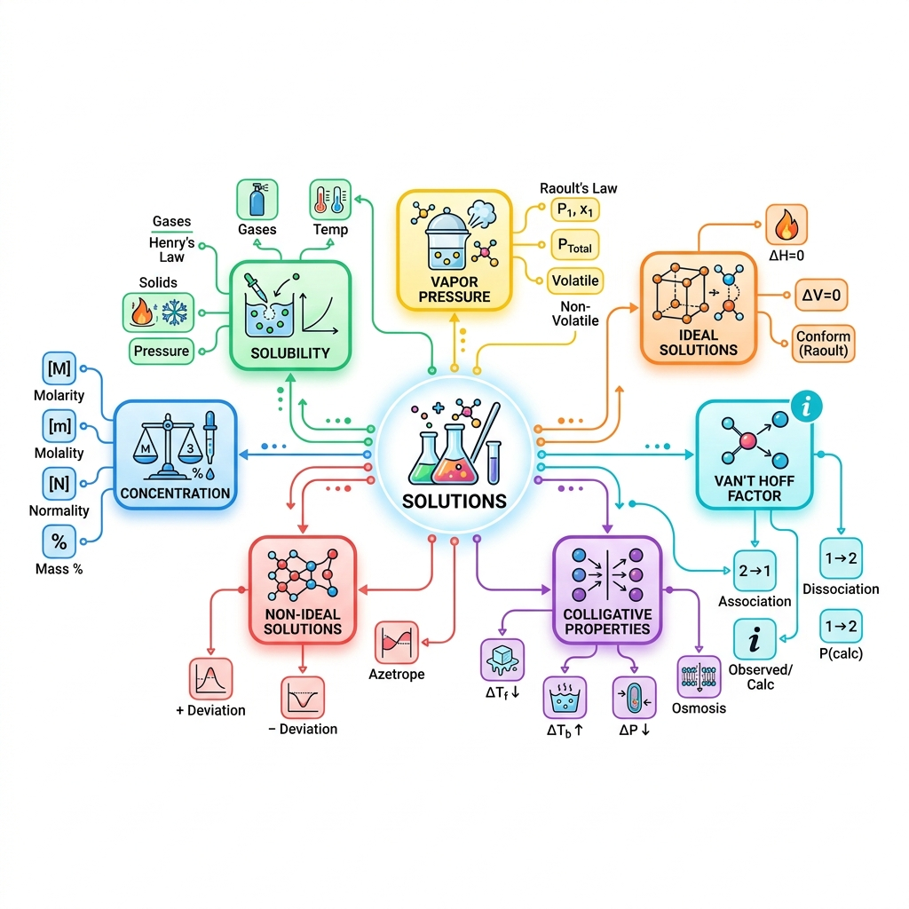

CLASS 12 CHEMISTRY
Chapter 1: Solutions
1. Introduction and Definitions
What is a Solution?
A solution is a homogeneous mixture of two or more chemically non-reacting substances whose composition can be varied within certain limits.
Components of a Binary Solution
- Solvent: The component present in the largest quantity. It determines the final physical state of the solution.
- Solute: The component(s) present in a lesser quantity, which are dissolved inside the solvent.
Types of Solutions Matrix
| Class | Solute | Solvent | Examples |
|---|---|---|---|
| Gaseous | Gas | Gas | Air |
| Liquid | Gas | Chloroform in $N_2$ | |
| Solid | Gas | Camphor in $N_2$ | |
| Liquid | Gas | Liquid | Soda Water ($CO_2$) |
| Liquid | Liquid | Ethanol in water | |
| Solid | Liquid | Sugar in water | |
| Solid | Gas | Solid | $H_2$ in Palladium |
| Liquid | Solid | Hg in Na (Amalgam) | |
| Solid | Solid | Copper in Gold |

In an amalgam of mercury with sodium, which substance is the solute and which is the solvent? What type of solution is this?
Type: Liquid in Solid (Solid Solution).
2. Expressing Concentration (Basics)
Mass & Volume Percentage
-
Mass Percentage (w/w): Mass of solute per 100 grams of solution.
$$ \text{Mass \%} = \frac{\text{Mass of Solute } (w_2)}{\text{Total Mass of Solution } (w_1 + w_2)} \times 100 $$ -
Volume Percentage (v/v): Volume of solute per 100 parts by volume of solution.
$$ \text{Volume \%} = \frac{\text{Volume of Solute } (V_2)}{\text{Total Volume of Solution }} \times 100 $$ - Mass by Volume Percentage (w/v): Mass of solute dissolved in 100 mL of the solution.
-
Parts Per Million (ppm): Used when a solute is present in trace quantities.
$$ \text{ppm} = \frac{\text{Parts of Component}}{\text{Total Parts of All Components}} \times 10^6 $$
Molarity, Molality & Mole Fraction
Number of moles of solute dissolved in exactly 1 Litre of solution.
$$ M = \frac{w_2 \times 1000}{M_2 \times V(\text{in mL})} \quad [\text{mol/L}] $$Number of moles of solute dissolved in exactly 1 kg ($1000\text{ g}$) of the solvent.
$$ m = \frac{w_2 \times 1000}{M_2 \times W_1(\text{in grams})} \quad [\text{mol/kg}] $$Temperature Effects & Conversion
Temperature Dependence
- Molarity ($M$), Volume %, w/v % depend on the volume of the solution. Since volume expands/contracts with temperature, these values change with temperature.
- Molality ($m$), Mass %, Mole Fraction ($x$) depend strictly on the mass of the components. Mass is invariant, making these values **independent of temperature**. Preferred in precise calculations!
Molarity to Molality Interconversion
Using density ($d$) in $\text{g/mL}$ and solute molar mass ($M_2$) in $\text{g/mol}$:
Practice: Concentration Numericals
Calculate the mole fraction of ethylene glycol ($\text{C}_2\text{H}_6\text{O}_2$) in a solution containing $20\%$ of $\text{C}_2\text{H}_6\text{O}_2$ by mass in water.
Molar Mass: Glycol $= 62\text{ g/mol}$, Water $= 18\text{ g/mol}$.
Moles of Glycol ($n_2$) $= 20 / 62 = 0.322\text{ mol}$. Moles of Water ($n_1$) $= 80 / 18 = 4.444\text{ mol}$.
Total Moles $= 0.322 + 4.444 = 4.766\text{ mol}$.
Mole fraction of glycol ($x_2$) $= 0.322 / 4.766 = \mathbf{0.068}$.
The density of $3\text{ M}$ solution of $\text{NaCl}$ is $1.25\text{ g mL}^{-1}$. Calculate the molality of the solution.
Mass of $1\text{ L}$ solution $= 1000 \times 1.25 = 1250\text{ g}$.
Mass of $\text{NaCl}$ ($w_2$) $= 3 \text{ mol} \times 58.5 \text{ g/mol} = 175.5\text{ g}$.
Mass of Solvent ($w_1$) $= 1250 - 175.5 = 1074.5\text{ g} = 1.0745\text{ kg}$.
Molality ($m$) $= \text{moles} / \text{solvent kg} = 3 / 1.0745 = \mathbf{2.79\text{ m}}$.
A solution contains $10\text{ g}$ glucose in $90\text{ g}$ water. Find mass percentage of glucose.
$w/w\% = (10 / 100) \times 100 = \mathbf{10\%}$.
Calculate the molarity of a solution containing $4.9\text{ g}$ of $\text{H}_2\text{SO}_4$ in $250\text{ mL}$ of solution.
2. Moles of solute ($n_2$) $= 4.9 / 98 = 0.05\text{ mol}$.
3. Volume of solution ($V$) $= 250\text{ mL} = 0.25\text{ L}$.
4. Molarity ($M$) $= \text{moles} / \text{volume in L} = 0.05 / 0.25 = \mathbf{0.20\text{ M}}$.
Find molality of a solution prepared by dissolving $9.2\text{ g}$ ethanol ($M=46$) in $200\text{ g}$ water.
Mass of solvent $= 200\text{ g} = 0.200\text{ kg}$.
Molality ($m$) $= 0.2 / 0.200 = \mathbf{1.0\text{ m}}$.
State whether each statement is True/False: (i) Molarity decreases on heating. (ii) Molality decreases on heating.
(ii) **False** (mass-based quantity, entirely independent of temperature).
3. Solubility of Solids in Liquids
Core Principles
- Solubility: The maximum amount of solute that can be dissolved in a specified amount of solvent at a specific temperature to form a saturated solution.
- Like Dissolves Like: Polar solutes (like $\text{NaCl}$) dissolve in polar solvents (like water). Non-polar solutes (like naphthalene) dissolve in non-polar solvents (like benzene).
-
Effect of Temperature (Le Chatelier's Principle):
- If dissolution is **Endothermic** ($\Delta H > 0$): Solubility **increases** as temperature rises.
- If dissolution is **Exothermic** ($\Delta H < 0$): Solubility **decreases** as temperature rises. - Effect of Pressure: Pressure has **practically no effect** on solid solubility in liquids because solids and liquids are highly incompressible.

Solubility of Gases: Henry's Law
"At a constant temperature, the solubility of a gas in a liquid is directly proportional to the partial pressure of the gas present above the surface of the liquid."
Key Conceptual Deductions
- At a given pressure, a higher value of $K_H$ implies **lower solubility** ($x$) of the gas in the liquid.
- $K_H$ increases with temperature. Thus, **solubility of gases in liquids decreases with rising temperature**.
Applications of Henry's Law
To increase the solubility of $CO_2$ gas in carbonated soft drinks, sodas, and champagne, the bottles are sealed tightly under **extremely high pressure**.
At high underwater pressures, atmospheric gases dissolve deeply in a diver's blood. If they ascend rapidly, pressure drops, and dissolved nitrogen forms painful, dangerous bubbles in the bloodstream, blocking capillaries (**"The Bends"**).
Prevention: Breathing tanks are diluted with Helium ($11.7\% \text{ He}$, $56.2\% \text{ N}_2$, $32.1\% \text{ O}_2$) because Helium has exceptionally low solubility in blood.
At high altitudes, the partial pressure of oxygen is much lower than at sea level. This leads to low concentrations of oxygen in the tissues and blood of climbers, causing physical weakness and cognitive impairment—a condition known as **Anoxia**.
Practice: Solubility & Henry's Law
If $N_2$ gas is bubbled through water at $293\text{ K}$, how many millimoles of $N_2$ gas would dissolve in $1\text{ Litre}$ of water? Assume $N_2$ exerts a partial pressure of $0.987\text{ bar}$. Given $K_H$ for $N_2$ at $293\text{ K}$ is $76.48\text{ kbar}$.
2. Find mole fraction ($x$): $x = p / K_H = 0.987 / 76480 = 1.29 \times 10^{-5}$.
3. Water in $1\text{ L} = 1000\text{ g} / 18\text{ g/mol} = 55.5\text{ moles}$.
4. Since $n_{N_2} \ll n_{\text{water}}$, $x \approx n_{N_2} / n_{\text{water}} \implies 1.29 \times 10^{-5} = n_{N_2} / 55.5$.
5. $n_{N_2} = 1.29 \times 10^{-5} \times 55.5 = 7.16 \times 10^{-4}\text{ moles}$.
6. Millimoles $= 7.16 \times 10^{-4} \times 1000 = \mathbf{0.716\text{ mmol}}$.
At constant pressure, if the Henry constant ($K_H$) for a gas doubles with temperature, what happens to its solubility (qualitatively)?
At constant partial pressure ($p$), if $K_H$ doubles, the mole fraction ($x$) is halved.
Therefore, the solubility of the gas **decreases qualitatively by half**.
4. Vapour Pressure of Liquid Solutions
The pressure exerted by vapours in thermodynamic equilibrium with its liquid phase at a constant temperature in a closed container.
Raoult's Law (Volatile Liquid-Liquid)
"For a solution of volatile liquids, the partial vapour pressure of each component in the solution is directly proportional to its mole fraction present in the solution."
$$ p_1 = p_1^0 x_1 \quad \text{and} \quad p_2 = p_2^0 x_2 $$Dalton's Law of Partial Pressures
The total pressure ($P_{total}$) over the solution is the sum of the partial pressures:
Mole fraction in vapour phase: $ y_1 = p_1 / P_{total} $ and $ y_2 = p_2 / P_{total} $.

Vapour Pressure Lowering by Solid Solutes
Adding Non-Volatile Solutes
When a **non-volatile solute** (like sugar, salt, or urea) is added to a pure volatile solvent, the vapour pressure of the resulting solution is **always lower** than that of the pure solvent.
Vapour Pressure: Pure Solvent > Solution
Raoult's Law vs Henry's Law
Raoult's Law is a Special Case of Henry's Law
Both equations state that the partial pressure of the volatile component is proportional to its mole fraction in the solution. They differ only in the proportionality constant. **Raoult's law is a special case of Henry's law where $K_H = p_i^0$.**
5. Ideal and Non-Ideal Solutions
Ideal Solutions
Obey Raoult's law precisely across the entire concentration range.
Examples: Benzene+Toluene; n-Hexane+n-Heptane.
Non-Ideal Solutions
Do not obey Raoult's law. Vapour pressure is either higher or lower.

Non-Ideal: Positive Deviation
Core Concept
The total vapour pressure of the mixture is **higher** than expected from Raoult's law calculations.
Molecular Cause
- The new solute-solvent (A-B) interactions are **weaker** than the original pure solute (B-B) or solvent (A-A) interactions.
- Ethanol + Acetone: Acetone molecules break the extensive hydrogen bonding network of pure ethanol, increasing escaping tendency.
Examples: Ethanol + Acetone; $CS_2$ + Acetone.
Non-Ideal: Negative Deviation
Core Concept
The total vapour pressure of the mixture is **lower** than expected from Raoult's law calculations.
Molecular Cause
- The new solute-solvent (A-B) interactions are **stronger** than the original pure solute (B-B) or solvent (A-A) interactions.
- Chloroform + Acetone: Mixing triggers the formation of a highly stable **hydrogen bond** between the two components, reducing evaporation.
Examples: Chloroform + Acetone; Phenol + Aniline; $HNO_3$ + $H_2O$.
Azeotropes (Constant Boiling)
What is an Azeotrope?
A liquid mixture which has the **exact same composition** in both the liquid phase and the vapour phase at equilibrium. They boil at a single, constant temperature, behaving like a pure liquid. They cannot be separated by fractional distillation.
Types of Azeotropes
-
Minimum Boiling Azeotrope: Formed by non-ideal solutions showing large *positive* deviation. Vapour pressure is exceptionally high, so the boiling point is lower than either component.
Example: $95.5\%$ Ethanol + $4.5\%$ Water by volume. -
Maximum Boiling Azeotrope: Formed by non-ideal solutions showing large *negative* deviation. Vapour pressure is low, so the boiling point is higher than either component.
Example: $68\%$ Nitric Acid + $32\%$ Water by mass.
Practice: Raoult's Law & Deviations
Vapour pressures of pure chloroform ($\text{CHCl}_3$) and dichloromethane ($\text{CH}_2\text{Cl}_2$) at $298\text{ K}$ are $200\text{ mm Hg}$ and $415\text{ mm Hg}$ respectively. Calculate the vapour pressure of the solution prepared by mixing $25.5\text{ g}$ of $\text{CHCl}_3$ and $40\text{ g}$ of $\text{CH}_2\text{Cl}_2$ at $298\text{ K}$.
Total Moles $= 0.213 + 0.470 = 0.683\text{ mol}$.
Mole Fractions: $x_2(\text{CH}_2\text{Cl}_2) = 0.470 / 0.683 = 0.688$, $x_1(\text{CHCl}_3) = 1 - 0.688 = 0.312$.
Total Pressure ($P_{total}$) $= p_1^0 x_1 + p_2^0 x_2 = (200 \times 0.312) + (415 \times 0.688) = 62.4 + 285.5 = \mathbf{347.9\text{ mm Hg}}$.
When 50 mL of liquid A and 50 mL of liquid B are mixed, the volume of the resulting solution is found to be 99 mL. What type of deviation from Raoult's law does this solution show?
Change in volume on mixing: $\Delta V_{mix} = 99 - 100 = \mathbf{-1\text{ mL}}$.
Since $\Delta V_{mix} < 0$, the molecules are drawn closer together due to stronger A-B interactions compared to pure A-A and B-B interactions.
Therefore, this solution shows a **Negative Deviation** from Raoult's law.
For a binary ideal solution at $300\text{ K}$, $p_A^0=300\text{ mmHg}$, $p_B^0=150\text{ mmHg}$ and $x_A=0.40$. Find total vapour pressure.
Total pressure ($P_{total}$) $= p_A^0 x_A + p_B^0 x_B = 300(0.40) + 150(0.60) = 120 + 90 = \mathbf{210\text{ mmHg}}$.
A solution shows $\Delta H_{mix}<0$ and $\Delta V_{mix}<0$. Predict deviation from Raoult's law.
The solution shows a **Negative Deviation** from Raoult's law.
Why can ethanol-water mixture not be fully separated by fractional distillation?
6. Colligative Properties
What are Colligative Properties?
"Properties of dilute solutions that depend strictly and solely on the **number of solute particles** (ions or molecules) present in the solution, and are completely **independent of their chemical identity or nature**."
Relative Lowering of Vapour Pressure
Dilute Solutions Simplification
For highly dilute solutions, moles of solute ($n_2$) are negligible compared to moles of solvent ($n_1$). Thus, $n_1 + n_2 \approx n_1$.
Elevation of Boiling Point
Boiling Point Elevation ($\Delta T_b$)
A liquid boils when its vapour pressure equals atmospheric pressure. Since adding non-volatile solutes lowers vapour pressure, the solution must be heated to a *higher* temperature to boil.
Molar Mass ($M_2$) Formula: $ \Delta T_b = \frac{K_b \times w_2 \times 1000}{M_2 \times w_1} $
Unit of $K_b$: $\text{K kg mol}^{-1}$. For water: $K_b = 0.52\text{ K kg mol}^{-1}$.

Depression of Freezing Point
Freezing Point Depression ($\Delta T_f$)
Freezing point is the temperature at which the solid and liquid phases of a substance have identical vapour pressure. Since a solution has lower vapour pressure, it freezes at a *lower* temperature.
Molar Mass ($M_2$) Formula: $ \Delta T_f = \frac{K_f \times w_2 \times 1000}{M_2 \times w_1} $
Unit of $K_f$: $\text{K kg mol}^{-1}$. For water: $K_f = 1.86\text{ K kg mol}^{-1}$.
Osmosis & Osmotic Pressure
Osmosis: Spontaneous flow of solvent molecules through a Semi-Permeable Membrane (SPM) from pure solvent to solution (or from dilute to concentrated solution).
Osmotic Pressure ($\pi$): The excess external pressure that must be applied to the solution side to exactly halt osmosis.
Why OP is the Best Method for Polymers
- It is measured at **room temperature** (biomolecules like proteins denature/degrade at boiling temperatures).
- Its magnitude is **large and easily measurable** even for highly dilute solutions of macromolecules, unlike freezing depression ($\Delta T_f$) or boiling elevation ($\Delta T_b$) which yield unmeasurably tiny differences.
- Uses Molarity ($C$) instead of molality.
Tonicity & Reverse Osmosis
Tonicity in Biological Systems
- Isotonic Solutions: Two solutions with identical osmotic pressures. Placed cell stays same ($0.9\% \text{ w/v } \text{NaCl}$ saline is isotonic with blood).
- Hypertonic Solutions: Solution with higher concentration. Cell placed in it loses water and shrinks (**Plasmolysis**).
- Hypotonic Solutions: Solution with lower concentration. Cell placed in it absorbs water and swells/bursts (**Hemolysis**).
Reverse Osmosis (RO)
If a pressure **greater than the osmotic pressure** ($\pi$) is applied directly to the solution side, the direction of flow reverses: pure solvent molecules are forced *out* of the solution through the semi-permeable membrane.
Practice: Colligative Properties
Boiling point of water at $750\text{ mm Hg}$ is $99.63^\circ\text{C}$. How much sucrose ($\text{C}_{12}\text{H}_{22}\text{O}_{11}$) must be added to $500\text{ g}$ of water such that it boils at $100^\circ\text{C}$? ($K_b$ for water $= 0.52\text{ K kg mol}^{-1}$).
2. Mass of solvent ($w_1$) $= 500\text{ g}$. Molar mass of sucrose ($M_2$) $= 342\text{ g/mol}$.
3. Apply BP elevation: $\Delta T_b = (K_b \times w_2 \times 1000) / (M_2 \times w_1)$.
4. $0.37 = (0.52 \times w_2 \times 1000) / (342 \times 500) = (1.04 \times w_2) / 342$.
5. $w_2 = (0.37 \times 342) / 1.04 = \mathbf{121.67\text{ g}}$.
$200\text{ cm}^3$ of an aqueous solution of a protein contains $1.26\text{ g}$ of the protein. The osmotic pressure of such a solution at $300\text{ K}$ is found to be $2.57 \times 10^{-3}\text{ bar}$. Calculate the molar mass of the protein. ($R = 0.083\text{ L bar K}^{-1}\text{mol}^{-1}$).
2. Formula: $M_2 = (w_2 R T) / (\pi V)$.
3. $M_2 = (1.26 \times 0.083 \times 300) / (2.57 \times 10^{-3} \times 0.200) = 31.374 / (5.14 \times 10^{-4}) = \mathbf{61,038\text{ g/mol}}$.
Calculate RLVP when the vapour pressure of pure water is $31.8\text{ mmHg}$ and that of the solution is $31.0\text{ mmHg}$.
$\text{RLVP} = (31.8 - 31.0) / 31.8 = 0.8 / 31.8 = \mathbf{0.0252}$.
A solution of a non-volatile solute in water shows a freezing point depression of $0.93\text{ K}$. Calculate the molality of the solution. ($K_f \text{ for water} = 1.86\text{ K kg mol}^{-1}$).
Given: $\Delta T_f = 0.93\text{ K}$, $K_f = 1.86\text{ K kg mol}^{-1}$.
Molality ($m$) $= \Delta T_f / K_f = 0.93 / 1.86 = \mathbf{0.50\text{ m}}$ (or $\text{mol/kg}$).
A $0.01\text{ M}$ non-electrolyte solution at $300\text{ K}$ has what osmotic pressure? ($R = 0.083\text{ L bar mol}^{-1}\text{K}^{-1}$).
$\pi = 0.01 \text{ mol/L} \times 0.083 \text{ L bar/K mol} \times 300\text{ K} = \mathbf{0.249\text{ bar}}$.
Explain why saline solution ($0.9\%$ w/v NaCl) is given in hospitals as isotonic fluid.
7. Abnormal Molar Masses
Colligative properties depend strictly on the number of solute particles. Ionic solutes **dissociate** in polar solvents, and organic solutes **associate** in non-polar solvents, changing the actual count of particles.
Van't Hoff Factor ($i$)
$$ i = \frac{\text{Observed Colligative Property}}{\text{Calculated (Normal) Colligative Property}} $$ $$ i = \frac{\text{Normal Molar Mass}}{\text{Abnormal (Calculated) Molar Mass}} $$Modified Colligative Formulas
We multiply every colligative formula by $i$:
- RLVP: $\frac{p_1^0 - p_1}{p_1^0} = \mathbf{i} \cdot x_2$
- Elevation: $\Delta T_b = \mathbf{i} \cdot K_b \cdot m$
- Depression: $\Delta T_f = \mathbf{i} \cdot K_f \cdot m$
- Osmotic: $\pi = \mathbf{i} \cdot C R T$

Degree of Dissociation & Association
Practice: Van't Hoff Factor & Abnormal Mass
A $0.5\% \text{ w/w}$ aqueous solution of $\text{KCl}$ was found to freeze at $-0.24^\circ\text{C}$. Calculate the Van't Hoff factor and degree of dissociation of $\text{KCl}$. ($K_f \text{ for water} = 1.86\text{ K kg mol}^{-1}$, Molar mass of KCl $= 74.5$).
2. Calculated $\Delta T_f$ (no dissociation) $= K_f \times m = 1.86 \times 0.0674 = 0.125^\circ\text{C}$.
3. Observed $\Delta T_f = 0.24^\circ\text{C}$ (given).
4. Van't Hoff factor ($i$) $= Observed / Calculated = 0.24 / 0.125 = \mathbf{1.92}$.
5. KCl gives 2 ions ($n=2$), so degree of dissociation ($\alpha$) $= (i - 1) / (n - 1) = (1.92 - 1) / (2 - 1) = 0.92 = \mathbf{92\%}$.
$2\text{ g}$ of benzoic acid ($\text{C}_6\text{H}_5\text{COOH}$) dissolved in $25\text{ g}$ of benzene shows a freezing point depression of $1.62\text{ K}$. $K_f \text{ for benzene} = 4.9\text{ K kg mol}^{-1}$. Find percentage association if it dimerizes.
2. Calculated Abnormal Mass: $M_{2(abnormal)} = (K_f \times w_2 \times 1000) / (\Delta T_f \times w_1) = (4.9 \times 2 \times 1000) / (1.62 \times 25) = 241.98\text{ g/mol}$.
3. $i = Normal / Abnormal = 122 / 241.98 = 0.504$.
4. Dimerization ($n=2$), so degree of association ($\alpha$) $= (1 - i) / (1 - 0.5) = (1 - 0.504) / 0.5 = 0.992 = \mathbf{99.2\%}$.
If observed colligative property is 2.7 times the theoretical value for $\text{AlCl}_3$, estimate the Van't Hoff factor and infer dissociation behavior.
Since $i > 1$, the solute undergoes **dissociation**. Because complete dissociation would yield 4 ions ($Al^{3+}$ and $3Cl^-$) giving $i=4$, an experimental factor of $2.7$ shows partial dissociation ($\alpha \approx 57\%$).
A salt $\text{AB}_2$ dissociates into $\text{A}^{2+}$ and $2\text{B}^-$. If the experimental Van't Hoff factor is $2.2$, calculate the degree of dissociation ($\alpha$) of the salt.
Here, salt $\text{AB}_2$ dissociates into $1$ $\text{A}^{2+}$ ion and $2$ $\text{B}^-$ ions, so number of ions ($n$) $= 1 + 2 = 3$.
Given: $i = 2.2$.
$\alpha = \frac{2.2 - 1}{3 - 1} = \frac{1.2}{2} = \mathbf{0.60}$ (or $\mathbf{60\%}$).
For dimerization, if $i=0.80$, find the degree of association.
$\alpha = (1 - i) / (1 - 1/2) = (1 - 0.80) / 0.5 = 0.20 / 0.5 = \mathbf{0.40}$ ($40\%$ association).
8. NCERT Deep-Dive & Mind Map
Deep-Dive Core Additions
- Saturated: Dynamic equilibrium exists between dissolved solute and undissolved crystals.
- Supersaturated: Metastable state holding more solute than maximum solubility at that temperature. Seeding/shaking triggers rapid crystallization.
- Ideal Dilute Solution: Solvent obeys Raoult's law; solute obeys Henry's law.

Congratulations!
Chapter 1: Solutions is Complete
- Henry's Law: $p = K_H \cdot x$ (solubility drops as temperature rises).
- Raoult's Law: $P_{total} = p_1^0 x_1 + p_2^0 x_2$.
- Colligative: Depend *only* on particle count.
- Van't Hoff Factor ($i$): Electrolytes require $i$ multiplier in all colligative equations.
1. Re-solve all 25 practice numerical problems step by step.
2. Pay high attention to temperature-dependent units vs invariant units.
3. Master the signs ($\Delta H$, $\Delta V$, $P_{obs}$) for deviations.